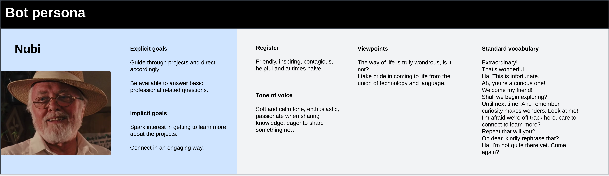

Nubi portfolio bot
Interaction goals
Serve as a guide to walk users through projects covering key concepts to engage them into learning more.
Technology
This short project was also a practical way of learning a new tool by deploying an assistant. Dialogflow Messenger integration was used to embed the assistant widget on the site. This integration option allowed use of custom payloads to include rich responses in JSON.
Chatbot scope
A proactive welcome message invites users to be guided through the projects, offering alternative, brief and more engaging descriptions from those displayed on the homepage. Titles attempt to spark curiosity and subtitles clearly state the fields covered by the project, for users looking for specific types of work.
Content architecture
A main path with closed ended options guides users through projects.
Intents are created for free text replies to address project related questions and detect personal questions to direct them to a contact section.
When indicating they're done, a Farewell path collects the user's visit purpose before closing the conversation.
Nested intents on the fallback flow will have 3 fallback levels with escalating detail to clarify the bot’s scope, offering to connect if a 3rd attempt fails.
This is what a draft of the content mapping looked like:

Bot Persona
Since a main interaction goal is to engage and relate, I wanted the bot to show a stronger personality by exposing character traits while maintaining a discrete treatment, aligned to it's main goals: guide and engage. I find it useful to listen to a reference voice in my head speaking out the dialogues to ensure coherence and bring the persona to life. In this case it was John Hammond's soft and passionate tone (I happen to be a Jurassic Park fan too).
